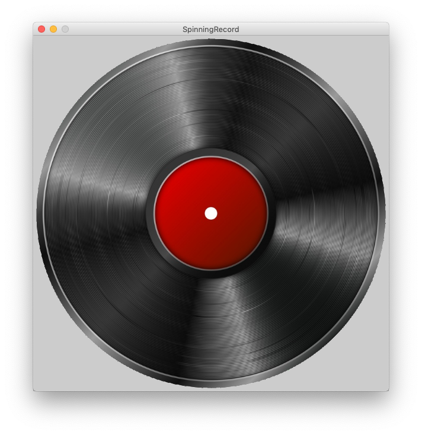

Spinning Record

We are going to make a virtual record player that spins and plays your song when you click on it.
1. Use the given record.png image or find your own image of a record.
i) If using your own image, copy the file onto the /images folder.
ii) Load the image into your code using the code below:
PImage pictureOfRecord; //as member variable
size(600,600); //in setup method
pictureOfRecord= loadImage("record.png"); //in setup method
image(pictureOfRecord, xPosition, yPosition); //in draw method
2. Set the size of your image to match the size of your canvas (after you have loaded it).
pictureOfRecord.resize(height,width); //in setup method
3. Use this method to rotate your image. Make sure you use the image() command after you call rotateImage().
void rotateImage(PImage image, int amountToRotate) {
translate(width/2, height/2);
rotate(amountToRotate*TWO_PI/360);
translate(-image.width/2, -image.height/2);
}
5. Adjust the speed of the record player. Make the record spin.
i) Make a variable to keep track of the image angle.
ii) Increase this variable in the draw method.
iii) Use this variable when you call the rotateImage() method.
6. Only spin the record when the user clicks the mouse button. Hint: use mousePressed
7. Add a song. Use the sound file already in the project, awesomeTrack.mp3, or add a different one.
8. Only play the song when the mouse is pressed. Hint: use the method below.
song.play()
9. Make the record spin as fast as possible